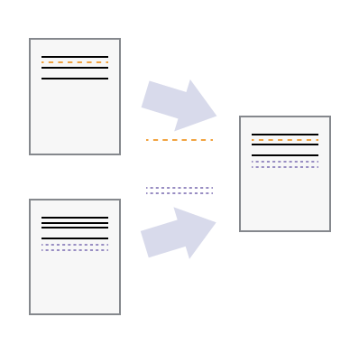
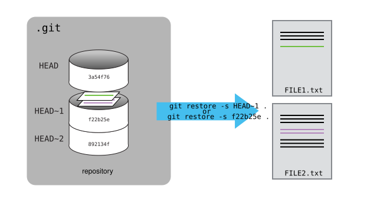
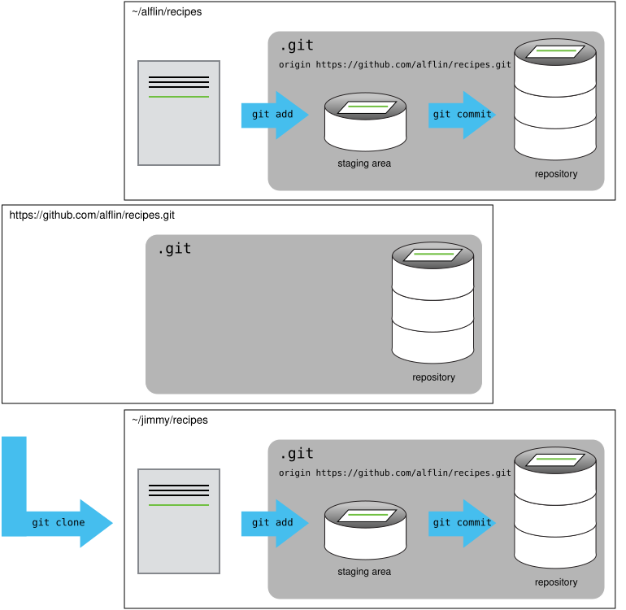
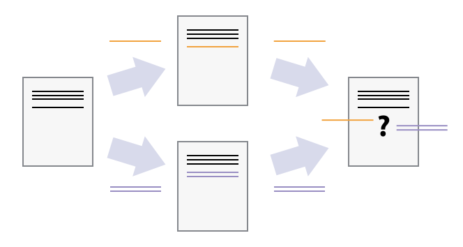

Cheatsheet for Git and GitHub
Leykun G. and Mesfin D., DAVT-NDMC, EPHI
26-30 March, 2026
Automated Version Control
Learning Objectives
- Understand what version control is and why it matters
- Learn how Git enables reproducible research
- Recognize the benefits of distributed version control
What is Version Control?
Definition: A system that records changes to files over time
Key capabilities:
- Recover earlier versions of any file
- See who changed what and when
- Work simultaneously with others without conflict
- Maintain complete project history
The Problem with Manual Version Control
Without version control, researchers face these challenges:

Manual version control problem
Common issues:
- Multiple files with confusing names
- No way to know which version is current
- Cannot recover previous versions easily
- Collaboration becomes impossible
How Version Control Works
Version control records changes as sequential snapshots:

Sequential changes
The process:
- Start with a base version
- Record each change as a commit
- Replay commits to reconstruct any version
- Every commit has a unique identifier
Multiple Versions and Merging
Different users can work independently and combine changes:


Key concept: Git automatically merges changes when possible
What is Git?
Git is a distributed version control system
| Feature | Description |
|---|---|
| Distributed | Every user has complete history |
| Fast | Most operations are local |
| Free | Open source, no cost |
| Standard | Industry standard for research |
Origin: Created by Linus Torvalds in 2005 for Linux kernel development
Setting Up Git
First-Time Configuration
What these commands do:
--globalapplies to all repositories on your computer- Your name and email appear on every commit
- Must match your GitHub email address
Essential Git Configuration
Set your text editor:
Set default branch name:
Enable color output:
View Your Configuration
Important settings to verify: - user.name and user.email - core.editor - init.defaultBranch
Creating a Repository
Initialize a New Repository
What happens: - Creates a .git directory - Stores all version control information - Your working directory remains unchanged
The .git Directory
Important facts:
.gitcontains the entire project history- Never edit files in
.gitdirectly - Deleting it removes all version control
- Use
git cloneto copy repositories
Checking Status
git status is your most important command:
- Shows current branch
- Lists untracked files
- Indicates staged changes
- Suggests next steps
Tracking Changes
Create a File
Add this content:
# Malaria Incidence Analysis - Ethiopia
import pandas as pd
import numpy as np
def load_malaria_data(filepath):
"""Load malaria incidence data."""
return pd.read_csv(filepath)
def calculate_incidence(cases, population):
"""Calculate incidence rate per 100,000."""
return (cases / population) * 100000Check Status After Creating File
“Untracked files” means: - Git sees the file - But it is not yet version controlled - Use git add to start tracking
The Three States of Git

Git workflow diagram
| State | Description | Command |
|---|---|---|
| Working Directory | Where you edit files | - |
| Staging Area | Prepared changes | git add |
| Repository | Committed history | git commit |
Staging and Committing
Commit components:
- Unique identifier (hash)
- Author name and email
- Timestamp
- Commit message
Viewing History
Compact view:
Modifying a File
Add a new function to your script:
Viewing Changes
diff --git a/malaria_incidence_analysis.py b/malaria_incidence_analysis.py
index df0654a..315bf3a 100644
--- a/malaria_incidence_analysis.py
+++ b/malaria_incidence_analysis.py
@@ -7,3 +7,7 @@ def load_malaria_data(filepath):
def calculate_incidence(cases, population):
incidence = (cases / population) * 100000
return incidence
+
+def age_standardize_incidence(data, standard_population):
+ age_adj_incidence = data['incidence'] * standard_population
+ return age_adj_incidenceUnderstanding the output: - + indicates added lines - - indicates removed lines - Shows changes since last commit
Committing Changes
Guidelines for commit messages: - Keep under 50 characters - Use imperative mood (“Add” not “Added”) - Explain what and why - Complete the sentence: “If applied, this commit will…”
Exploring History
Understanding HEAD
HEADpoints to the most recent commitHEAD~1is the previous commitHEAD~2is two commits ago
Referencing Commits
Each commit has a unique 40-character identifier:
f22b25e3233b4645dabd0d81e651fe074bd8e73bUse shortened version:
Common log options:
Restoring Files

Git restore diagram
| Operation | Command |
|---|---|
| Discard unstaged changes | git restore file.py |
| Unstage a file | git restore --staged file.py |
| Restore from specific commit | git restore --source f22b25e file.py |
Ignoring Files
Why Ignore Files?
| Category | Examples | Reason |
|---|---|---|
| Data files | *.csv, *.nc |
Use Git LFS instead |
| Environment | venv/, .env |
Contains secrets |
| Cache | __pycache__/ |
Generated files |
| IDE | .vscode/ |
User-specific |
| OS | .DS_Store |
System files |
Creating .gitignore
Add patterns:
*.png
figures/
__pycache__/
*.pyc
.DS_Store
.envCommon .gitignore Patterns
| Pattern | What it ignores |
|---|---|
*.log |
All log files |
temp/ |
Entire temp directory |
*.csv |
All CSV files |
!important.csv |
Exception: track this file |
data/raw/ |
Specific directory |
**/*.pyc |
Python cache anywhere |
Viewing Ignored Files
Force add ignored file:
Remotes and GitHub
Create Remote Repository
- Log into GitHub
- Click “+” → “New repository”
- Name:
malaria - Leave empty (no README)
- Click “Create repository”

GitHub new repository
Connect Local to Remote
SSH Authentication
SSH uses key pairs:
| Key | Purpose |
|---|---|
| Public key | Shared with GitHub |
| Private key | Kept on your computer |
Generate SSH key:
Add to GitHub: 1. Settings → SSH and GPG keys 2. New SSH key 3. Paste public key from cat ~/.ssh/id_ed25519.pub
Push to GitHub
What -u does: - Sets upstream tracking - Future pushes: just git push
After First Push

After first push
Now you have: - Local repository on your computer - Remote repository on GitHub - Complete history in both places
Pulling Changes
Workflow best practice:
git pullbefore starting work- Make changes
git addandgit commitgit push
Collaborating
Add a Collaborator
Owner: Repository → Settings → Collaborators → Add people

GitHub collaborators
Collaborator: Accept invitation via email
Clone a Repository

Git clone diagram
What clone does:
- Downloads entire repository
- Creates remote called
origin - Sets up tracking
Collaborative Workflow
| Step | Command |
|---|---|
| Update local | git pull origin main |
| Make changes | Edit files |
| Stage changes | git add file.py |
| Commit | git commit -m "message" |
| Push | git push origin main |
Conflicts
What Causes Conflicts?
Conflicts occur when two people change the same lines:

Merge conflict
Resolution steps:
- Pull to detect conflicts
- Edit file to remove markers
- Stage resolved file
- Commit and push
Conflict Markers
When a conflict occurs, Git marks the file:
| Marker | Meaning |
|---|---|
<<<<<<< HEAD |
Your changes |
======= |
Separator |
>>>>>>> |
Their changes |
Resolving Conflicts
Edit the file to keep both functions:
Strategies to Minimize Conflicts
| Strategy | How it helps |
|---|---|
| Pull frequently | Get changes before they diverge |
| Small commits | Less likely to overlap |
| Use branches | Isolate experiments |
| Communicate | Coordinate with team |
| Break large files | Reduce overlapping areas |
Branching for Experiments
Why Branch?
- Test different modeling approaches in isolation
- Experiment without affecting stable code
- Collaborate on features independently
- Keep production code in
main
Branching Commands
| Operation | Command |
|---|---|
| Create branch | git checkout -b experiment/rf-tuning |
| List branches | git branch |
| Switch branch | git checkout main |
| Merge branch | git merge experiment/rf-tuning |
| Delete branch | git branch -d experiment/rf-tuning |
Example: Experiment Branches
# Baseline
git checkout -b main
git commit -m "Baseline: linear regression"
# Experiment 1
git checkout -b experiment/rf-tuning
git commit -m "RF with grid search"
# Experiment 2
git checkout main
git checkout -b experiment/xgboost
git commit -m "XGBoost with early stopping"
# View all branches
git branchGit LFS for Large Files
Install and Configure
Pre-commit Hooks
Automate Code Quality Checks
Create .pre-commit-config.yaml:
Cheat Sheet
Essential Git Commands
| Command | Purpose |
|---|---|
git init |
Create new repository |
git status |
Check current state |
git add file |
Stage changes |
git commit -m "msg" |
Save changes |
git log --oneline |
View history |
git diff |
See changes |
git remote add origin URL |
Connect to GitHub |
git push -u origin main |
Push to remote |
git pull |
Get remote changes |
git checkout -b name |
Create branch |
git merge branch |
Merge branch |
Useful Git Aliases
Add to ~/.gitconfig:
[alias]
st = status
co = checkout
br = branch
ci = commit
lg = log --oneline --graph --all
last = log -1 HEAD
unstage = reset HEAD --
undo = reset --soft HEAD^
sync = !git pull --rebase && git pushResources
Official Documentation
Tools for Data Science
- DVC – Data version control
- Pre-commit – Code quality hooks
- Quarto – Scientific publishing
Advanced Branching Strategies
Git Flow for Data Science
| Branch Type | Purpose | Example |
|---|---|---|
main |
Production-ready, reproducible results | main |
develop |
Integration branch for features | develop |
feature/* |
New features, data sources | feature/ethiopia-climate-data |
experiment/* |
ML experiments, hyperparameter tuning | experiment/rf-hyperopt |
hotfix/* |
Critical bug fixes | hotfix/incidence-calculation |
release/* |
Versioned releases for papers | release/v2.3-paper-submission |
GitHub Flow for Data Science
# Start a new experiment
git checkout -b experiment/xgboost-tuning main
# Work on your experiment
git add .
git commit -m "Add XGBoost with early stopping"
# Push to GitHub for collaboration
git push -u origin experiment/xgboost-tuning
# Create Pull Request for review
# After approval, merge to main
git checkout main
git merge --no-ff experiment/xgboost-tuning
git push origin mainTrunk-Based Development for Teams
Git Hooks & Automation
Types of Git Hooks
| Hook | Trigger | Common Use |
|---|---|---|
pre-commit |
Before commit | Linting, formatting, secret scanning |
commit-msg |
After commit message entry | Validate commit message format |
pre-push |
Before push | Run tests, check for large files |
post-commit |
After commit | Update logs, notifications |
Git Hooks & Automation {conti…}
Pre-commit Hook Example (Python/Data Science)
Create .git/hooks/pre-commit:
#!/bin/bash
# Run black formatter
black notebooks/*.py scripts/*.py
# Run ruff linter
ruff check notebooks/*.py scripts/*.py
# Check for large files (>10MB)
find . -type f -size +10M ! -path "./.git/*" | while read file; do
echo "Warning: Large file detected: $file"
echo "Use Git LFS for large files"
exit 1
done
# Check for secrets
if grep -r "API_KEY\|SECRET\|PASSWORD" --exclude-dir=.git; then
echo "ERROR: Secrets found in code!"
exit 1
fiGit Hooks & Automation {conti…}
Commit Message Template
Create .gitmessage.txt:
# <type>(<scope>): <subject>
# |<----- 50 characters ----->|
#
# Types:
# feat - new feature/analysis
# fix - bug fix
# data - data update
# model - model update
# paper - paper-related changes
# docs - documentation
#
# Example:
# feat(analysis): Add age-standardization for TB incidence
# Body: Explain what and why, not how
#
# Footer: Reference issues, breaking changes
#
# Example:
# Closes #123Configure Git to use it:
Git Bisect for Debugging
Finding Which Commit Broke Your Analysis
# Start bisect session
git bisect start
# Mark current commit as bad (broken)
git bisect bad
# Mark known good commit (working analysis)
git bisect good f22b25e
# Git will automatically checkout a commit halfway
# Run your test
python tests/test_incidence_calculation.py
# Mark as good or bad
git bisect good # if test passes
git bisect bad # if test fails
# Repeat until Git identifies the problematic commit
# End bisect session
git bisect resetGit Bisect for Debugging
Automated Bisect with Script
Interactive Rebase Mastery
Squashing Commits Before Merging
In the editor:
Result: One commit with all changes.
Interactive Rebase Mastery
Reordering Commits
Interactive Rebase Mastery
Editing Commit Messages
Git Worktrees for Parallel Development
What Are Worktrees?
Worktrees allow you to have multiple branches checked out simultaneously in different directories.
Git Worktrees for Parallel Development
Benefits for Data Science
- Work on feature branch while keeping main open
- Compare two experiments side by side
- Run parallel analyses without switching branches
Advanced Stashing Techniques
Stashing Untracked Files
# Stash including untracked files
git stash -u
# Stash with message
git stash push -m "WIP: Climate data normalization"
# List stashes
git stash list
# Apply specific stash
git stash apply stash@{1}
# Apply and drop
git stash pop stash@{1}
# Create branch from stash
git stash branch experiment/new-approach stash@{0}Advanced Stashing Techniques
Stashing Specific Files
Git Reflog: Recovering Lost Commits
What is Reflog?
Reflog tracks every change to Git references (branches, HEAD).
Git Reflog: Recovering Lost Commits
Recovery Scenarios
Cherry-Picking Specific Changes
Applying Specific Commits
Cherry-Picking Specific Changes
Real-World Example: Cherry-Picking Hotfixes
Git Submodules & Subtrees
Submodules for Shared Components
Git Submodules & Subtrees
Subtrees for Monorepo Approach
# Add a subtree
git subtree add --prefix libs/common https://github.com/ephi/common.git main --squash
# Pull updates
git subtree pull --prefix libs/common https://github.com/ephi/common.git main --squash
# Push changes back
git subtree push --prefix libs/common https://github.com/ephi/common.git mainData Science Workflows
Reproducible Analysis Pipeline
# Start a new analysis
git checkout -b analysis/tb-2024 main
# Create structured commit history
git commit -m "data: Load TB incidence 2024 data"
git commit -m "feat: Add data validation for TB variables"
git commit -m "analysis: Calculate incidence by region"
git commit -m "viz: Create regional trend plots"
git commit -m "docs: Update methodology section"
# Create release for paper submission
git tag -a v2.3-paper-submission -m "Version for TB report 2024"
git push --tagsData Science Workflows
Experiment Tracking Workflow
# Baseline
git tag baseline-linear-regression
# Hyperparameter experiments
git checkout -b exp/rf-depth-10
git commit -m "exp: Random Forest depth=10"
# Results logged to experiment tracker
git checkout -b exp/rf-depth-15
git commit -m "exp: Random Forest depth=15"
# Merge best performing
git checkout main
git merge exp/rf-depth-15
git tag best-rf-modelCheat Sheet
Essential Advanced Commands
| Command | Purpose |
|---|---|
git rebase -i HEAD~n |
Interactive rebase (squash, reword, reorder) |
git cherry-pick <hash> |
Apply specific commit to current branch |
git bisect start |
Find which commit introduced a bug |
git reflog |
View all reference changes (recover lost commits) |
git stash push -u |
Stash including untracked files |
git worktree add <path> <branch> |
Create parallel working directory |
git reset --soft HEAD~1 |
Undo commit, keep changes staged |
git reset --hard HEAD~1 |
Undo commit, discard changes |
git restore --source=<hash> <file> |
Restore file from specific commit |
git log --oneline --graph --all |
Visualize full branch history |
Git Aliases for Data Science
Add to ~/.gitconfig:
[alias]
# History visualization
graph = log --oneline --graph --all --decorate
# Experiment management
exp = checkout -b experiment/
feature = checkout -b feature/
# Staging helpers
st = status -sb
unstage = reset HEAD --
last = log -1 HEAD --stat
# Recovery
undo = reset --soft HEAD^
redo = reset --hard ORIG_HEAD
# Cleanup
clean-branches = !git branch --merged | grep -v \"\\*\" | xargs -n 1 git branch -d
# Worktree shortcuts
wt = worktree
# Search
find = !git log --oneline --grep
blame-verbose = blame -w -C -C -C
# Statistics
stats = shortlog -sn --all --no-merges
contributors = shortlog -sn --all
# LFS helpers
lfs-ls = lfs ls-files
lfs-track = lfs trackGit Diff Enhancements
Quick Reference Card
| Scenario | Command |
|---|---|
| Fix typo in last commit | git commit --amend -m "new message" |
| Add forgotten file to last commit | git add file.txt → git commit --amend |
| Move commit to different branch | git cherry-pick <hash> → git branch -f old-branch HEAD~1 |
| Undo git add | git restore --staged file.txt |
| Discard local changes | git restore file.txt |
| See what changed before commit | git diff --staged |
| List all remote branches | git branch -r |
| Delete remote branch | git push origin --delete branch-name |
| See who wrote each line | git blame file.txt |
| Search across history | git grep "function_name" $(git rev-list --all) |
| Check disk usage | git count-objects -vH |
| Optimize repository | git gc --aggressive --prune=now |
Resources
| Resource | URL | Description |
|---|---|---|
| Pro Git Book | https://git-scm.com/book | Complete Git reference |
| Git Flight Rules | https://github.com/k88hudson/git-flight-rules | Troubleshooting guide |
| Atlassian Git Tutorials | https://www.atlassian.com/git/tutorials | Visual tutorials |
| DVC Documentation | https://dvc.org/doc | Data version control |
| GitHub Skills | https://skills.github.com | Interactive tutorials |
Thank you! 🤝
🇪🇹